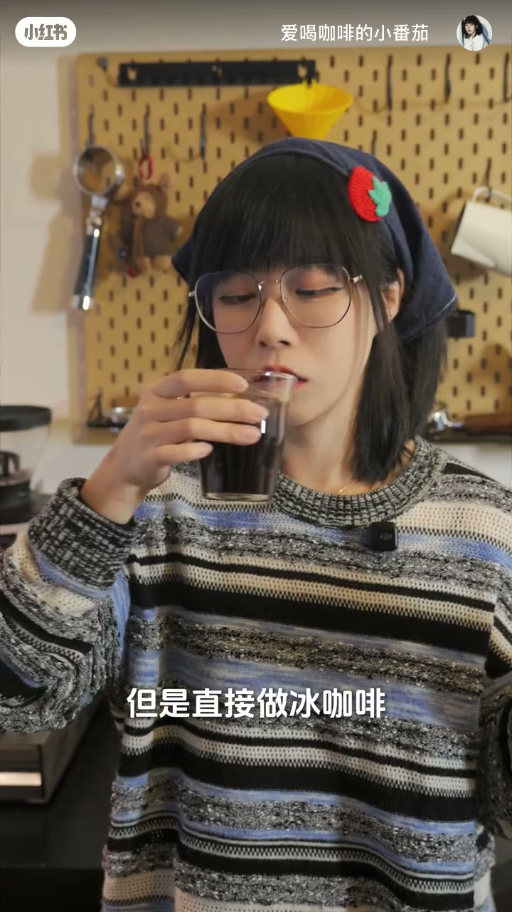
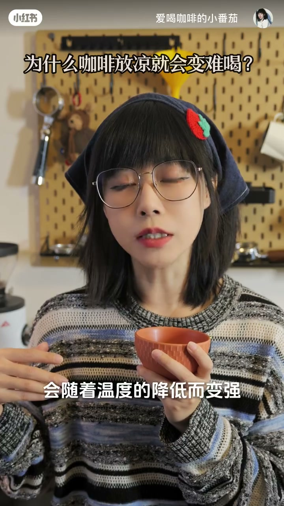
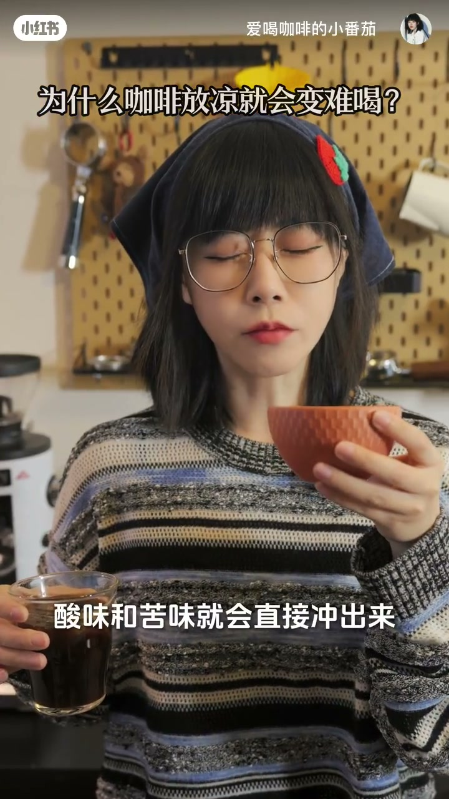

内容要点
这是一条口播科普，画面几乎一直是作者在咖啡角对着镜头讲，没有把同一杯热咖啡放凉再喝的对照实验。下面按她的论证分成三截，数字和「锁鲜」都按作者说法处理。
知识结构
开场她把这件事叫咖啡玄学：热咖啡放凉之后很难喝，直接做冰咖啡或者冷却咖啡却非常好喝。随后自报家门，说今天一句话讲明白。
作者说舌头对酸和苦的感知随温度降低而变强。热咖啡的高温盖住酸涩，有香甜感；放凉后酸味和苦味冲出来，口感垮掉。香气是挥发性的，放凉后闻不到，她说会砍掉一半风味。
冰咖啡是萃取后立刻加冰；冷却咖啡在她的解释里是从一开始低温浸泡。两者都不经历高温放凉，所以香气和甜感被锁住，喝起来更清爽。收束是点单建议和互动提问。
按作者的说法，难喝的不是「凉」本身，而是热咖啡先高温、再自然放凉：酸苦变得更冲，挥发性香气也散了。想喝凉的，走萃取后加冰，或她说的低温浸泡，不要把热的放凉。
图文实录
开场：热的放凉，冰的却好喝
视频未交代她为什么今天专门讲这件事，笔记标题只写到「为什么咖啡放凉之后」，正文话题标签是咖啡干货。口播从一句提问开始：你们有没有发现一个咖啡玄学。画面正中打出这五个字，她右手举着一只菱格纹的陶杯，左手摊开，身后木洞洞板上挂着咖啡手柄和一只黄色漏斗。
玄学在这里是钩子，不是她真的要讲超自然。下一句就把对比说死：热的咖啡放凉之后会变得很难喝，但是直接做冰咖啡或者是冷却咖啡，就会变得非常好喝。大约六秒时她把一只小玻璃杯送到嘴边，杯里是深色咖啡，字幕停在「但是直接做冰咖啡」。这一口是在喝，画面没有展示冰块，也没有展示浸泡罐。

喝完这口，她自我介绍：大家好，我是爱喝咖啡的小番茄。今天一句话给你们讲明白。账号名和头巾上的小番茄饰物对得上，视频没有再介绍店或器具品牌。
两层原因：酸苦变冲，香气跑光
她说的「一句话」其实是两层，先讲舌头。我们的舌头对酸和苦的感知，会随着温度的降低而变强。十八秒左右，画面上方换成笔记标题「为什么咖啡放凉就会变难喝？」，底部字幕正好是「会随着温度的降低而变强」。她双手捧着那只陶杯，眼睛眯着，像在强调感觉，而不是在做测量。

这是作者对口味的描述，视频里没有温度计、没有同一杯前后对比的品尝记录。二十四秒她把陶杯凑到脸前，另一只手仍端着那杯深色咖啡，字幕打出「酸味和苦味就会直接冲出来」。两只杯子同时在画面里，但她没有说明哪一杯是热的、哪一杯是放凉的。

第二层转到鼻子。而且咖啡的香气是挥发性的，热咖啡的香气非常浓，放凉之后香气就会跑光。闻不到香气就会砍掉一半的风味，自然就很难喝。「一半」没有称重或评分，按她的口气是在说少掉很大一块，不宜当成百分之五十的测量结果。到三十七秒，热放凉为什么难喝，她的理由就讲完了：酸苦更冲，加上香气散了。
冰咖啡和冷却咖啡为什么被她说成更好喝
她接着反问：那为什么直接做成冰咖啡，或者是冷却咖啡，就会很好喝呢。答案分两支，对应前面两个名字。
前半句对上冰咖啡：萃取完成马上加冰，她用「锁鲜」形容香气和甜感被留住。后半句对上她说的冷却咖啡：从一开始就是低温浸泡，不走「先热、再凉」这条路。视频没有演示加冰，也没有拍浸泡。所以香气和甜感就完全被锁住了，喝起来也会更加的清爽。这两句仍是作者的因果判断，画面停在口播。
点单建议落在最后十几秒：所以想喝凉咖啡，别点热的放凉，直接点冰咖啡或者是冷却会更好喝。五十四秒字幕是「所以想喝凉咖啡」。结尾她问你们爱喝热的还是冰的呢，再补一句关注我们一起聊咖啡吧。没有补充豆子、烘焙度或牛奶会不会改变这个结论。